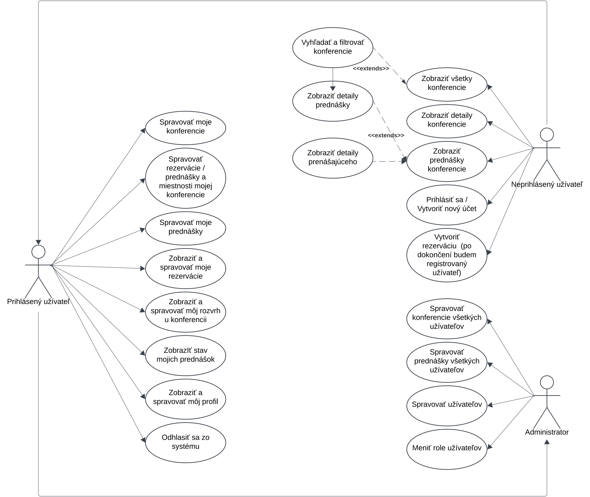

Konference
- Autoři
- Denis Fekete
xfeket01@stud.fit.vutbr.cz -
popis činnosti v týmu
- Nikita Kotvitskiy
xkotvi01@stud.fit.vutbr.cz -
databázové migrace a modely, správa přednášek, místností a rezervací.
- URL aplikace
- http://www.stud.fit.vutbr.cz/~xfeket01/IIS/
- (pokud má aplikace více vstupních stránek, napište obdobně další URL)
Uživatelé systému pro testování
Uveďte prosím existující zástupce všech rolí uživatelů.
| Login | Heslo | Role |
|---|
| admin | administrator | Administrátor |
| pepa | pepapepa | Užívateľ (usporiadava konferencie a učastní sa ako prednášajúci) |
| frantisek | frantisek | Užívateľ (častý návšetevník) |
Diagram případů užití

Video
Link to the video on You Tube
Implementace
Konferencie - ConferenceController.php
- Zobraziť všetky konferencie
- Vyhľadávať a filtrovať konferencie
- Zobraziť detaily konferencie
- Zobraziť prednášky danej konferencie
- Vytvoriť rezerváciu ako neregistrovaný užívateľ (po dokončený rezervácie bude vytvorený účet)
- Vytvoriť rezerváciu ako registrovaný užívateľ
- Vytvoriť novú konferenciu
- Zobraziť moje konferencie
- Upraviť moje konferencie
- Pridať miestnosti k mojim konferenciám
- Zobraziť ponúknuté prenášky
- Potvrdiť ponúknuté prednášky a nastaviť im čas a miestnosť
- Zobraziť všetky rezervácie
- Potvrdiť rezervácie
- Zobraziť detaily prednášok ktoré boli ponúknuté k danej prednáške
- Zobraziť informácie o osobe ktorá prednášku ponúka
Rezervácie konferencií - ReservationController.php
- Zobraziť moje rezervácie
- Zobraziť konkrétnu rezerváciu
- Zobrazenie stavu rezervácie (potvrdená, nepotvrdená)
- Zrušenie mojich rezervácií
- Zobraziť rozvrh prednášok pre konferenciu ktorej sa chcem účastniť
- Upraviť rozvrh prednášok pre konferenciu ktorej sa chcem účastniť
Prednášky - LectureController.php
- Zobrazenie detailov o prednáške
- Správa detailov prednášky
- Zobrazenie mojich prednášok
- Zrušenie mojich prednášok
- Zobrazenie stavu prednášky (potvrdené, nepotvrdené)
Užívatelia UserController.php
- Zobrazenie profilu užívateľa
- Zobrazenie potvrdených nadchádzajúcich a predošlých prednášok
- Upráva mojho profilu
- Vymazanie mojho profilu
Autorizácia - AuthController.php
- Vytvorenie účtu
- Prihlásenie sa do existujúceho účtu
- Odhlásenie sa zo systému
Administratíva - AdminController.php
- Zobrazenie všetkých užívateľov systému
- Vyhľadávanie užívateľov
- Upravovanie a mazanie užívateľov
- Správa rolí (oprávnení) užívateľov
- Zobrazenie všetkých konferencií z pohľadu administrátora
- Upráva a mazanie ľubovolných konferencií
- Správa prednášok u konferencií
- Správa miestností u konferencií
- Správa rezervácií u konferencií
Databáze

Instalace
Instalace na server (na příkladu školního serveru EVA):
- Umístěte adresář s Laravel projektem do adresáře WWW/IIS, (kde WWW slouží jako vstupní bod pro Apache).
-
Spusťte příkazy:
composer installnpm installphp artisan key:generate
- V souboru .env nastavte přístupové údaje k MySQL databázi (DB_DATABASE, DB_USERNAME, DB_PASSWORD) a hodnotu APP_BASE_URL.
-
Pro inicializaci databáze spusťte:
php artisan migrate
-
Pro naplnění databáze vzorovými daty spusťte:
php artisan db:seed
-
V adresáři WWW/IIS vytvořte soubor index.php s následujícím obsahem:
<?php
header("Location: [domena_serveru]/IIS/iis_project/public/index.php");
header("Connection: close");
exit();
?>
Od tohoto okamžiku by měla být informační aplikace dostupná na adrese:
[domena_serveru]/IIS
Známé problémy
Z časových důvodů nebyla implementována možnost stahovat vstupenky pro zaplacené rezervace.